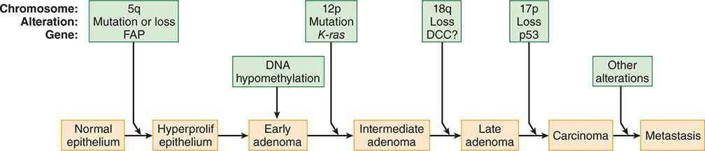

Principles of Cancer Surgery
Summary
- Cancer surgery encompasses diagnosis and staging, removal of primary and metastatic disease, reconstruction, prevention and palliation, not simply resection [1].
- Malignant transformation is a multistep genetic process that confers uncontrolled proliferation, invasion and metastatic potential on a clonal cell population [2].
- Modern management is delivered by a multidisciplinary team using accurate histological diagnosis, anatomical staging and, increasingly, molecular characterisation to select surgery, radiotherapy and systemic therapy [1].
Definition
- Neoplasia ("new growth") is the uncontrolled proliferation of cells; the term tumour, originally describing an inflammatory swelling, is now used interchangeably with neoplasm [2].
- Transformation is the multistep process by which normal cells acquire malignant characteristics, including tissue invasion and the ability to metastasize to distant sites, with each step reflecting one or more genetic alterations that confer a growth advantage [2].
- Cancer cells acquire a defined set of characteristics, establishing an autonomous lineage, resisting growth-inhibitory signals, sustaining proliferative signalling, obtaining replicative immortality, evading apoptosis, acquiring angiogenic competence, invading and disseminating, evoking inflammation, evading immune detection, losing specialised cell function, and altering energy metabolism, based on the Hanahan and Weinberg "hallmarks of cancer" [1].
Pathophysiology
- Cancer cells escape the normal checks and balances that regulate proliferation; oncogenes (mutated growth-control genes) and loss of tumour-suppressor gene function together permit unrestrained growth, usually requiring multiple sequential mutations, as demonstrated by the multistep model of colorectal tumorigenesis (APC → K-ras → DCC → p53) [1][2].
- Replicative immortality is achieved via telomerase, which prevents the telomere shortening that normally limits cells to 40–60 divisions (Hayflick hypothesis) [1].
- Apoptosis evasion follows loss of tumour-suppressor genes such as p53 (chromosome 17, cell-cycle arrest/apoptosis), Rb1 (chromosome 13, cell-cycle regulation), APC (chromosome 5) and DCC (chromosome 18, cell adhesion) [3].
- A tumour mass cannot exceed about 1 mm in diameter without acquiring a blood supply (angiogenesis); VEGF drives endothelial proliferation, vascular permeability and lymphangiogenesis [1][4].
- Invasion occurs via increased interstitial pressure, secretion of matrix metalloproteinases that degrade extracellular matrix, and integrin-mediated cell detachment and motility (epithelial–mesenchymal transition) [1][4].
- Metastasis is an inefficient process, only a small subset of disseminated cells forms micrometastases, and an even smaller number progress to macrometastases; the "seed and soil" theory holds that a cancer cell's ("seed") growth in a secondary site depends on compatibility with that organ's microenvironment ("soil") [4].
- Tumour dormancy, in which recurrence can occur decades after apparently curative treatment of the primary, may reflect loss of host immunologic control of subclinical disease [4].
- Tumour growth follows a Gompertzian curve: exponential in early stages, with the growth rate slowing as the tumour enlarges because of nutrient and oxygen competition [1].
- Cancer cells also alter energy metabolism, favouring aerobic glycolysis (the Warburg effect) even when oxygen is available [1].

Clinical features
- Patterns of spread have clinical diagnostic significance: a suspicious supraclavicular node (Virchow's node) suggests primary cancer of the neck, breast, lung, stomach or pancreas; a suspicious axillary node suggests lymphoma, breast cancer or melanoma; a periumbilical node (Sister Mary Joseph's node) suggests pancreatic cancer; ovarian metastases from stomach cancer are called a Krukenberg tumour; bone metastases are most commonly from breast (most common) or prostate cancer; skin metastases arise from breast cancer or melanoma; and small bowel metastases are most commonly from melanoma [3].
- Lymph nodes have poor barrier function and should be regarded as a sign of probable metastasis rather than a filter that reliably contains disease [3].
- Nodal status is the most important prognostic indicator for lung and breast cancer in the absence of systemic metastases, whereas tumour grade is the most important prognostic indicator for sarcoma without systemic metastases [3].
Etiology
- Both inheritance and environment contribute to cancer development, with the balance varying by tumour type, non-small cell lung cancer is overwhelmingly attributable to smoking (about 80% of cases), whereas germline BRCA1 mutation confers a 60–90% lifetime risk of breast cancer independent of environmental exposure [1].
- Hereditary cancer is suggested by tumour development at a younger age than usual, bilateral disease, multiple primary malignancies, cancer in the less commonly affected sex (e.g., male breast cancer), clustering of the same cancer type in relatives, and association with conditions such as intellectual disability or pathognomonic skin lesions, but not by paraneoplastic syndromes [4].
- Key familial cancer syndromes include Li-Fraumeni (TP53, autosomal dominant: sarcoma, breast cancer, brain tumours, leukaemia, adrenocortical carcinoma), familial adenomatous polyposis (APC), Lynch syndrome/HNPCC (DNA mismatch repair genes MLH1, MSH2, MSH6), Cowden syndrome (PTEN: breast, thyroid, endometrial cancer), MEN2 (RET: medullary thyroid cancer, phaeochromocytoma) and hereditary diffuse gastric cancer (CDH1) [2][3].
- Infectious causes of cancer include human papillomavirus (cervical cancer), Helicobacter pylori (gastric cancer), hepatitis B and C (hepatocellular carcinoma), and Epstein-Barr virus (Burkitt lymphoma, nasopharyngeal carcinoma) [3].
- Chemical and physical carcinogens include coal tar (larynx, skin, bronchial cancer), beta-naphthylamine (bladder cancer), benzene (leukaemia) and asbestos (mesothelioma) [3].
- Proto-oncogenes implicated in carcinogenesis include ras (GTPase defect), src (tyrosine kinase defect), sis (PDGF receptor defect), erb B (EGFR defect) and myc family transcription factors [3].
- Obesity is an established risk factor for cancers of the oesophagus, colorectum, gallbladder, pancreas, liver, stomach, postmenopausal breast, uterus, ovary, kidney and thyroid, and contributes to up to 20% of cancer-related deaths worldwide [2].
Diagnosis
- Accurate histological or cytological diagnosis is essential before definitive treatment; core needle biopsy provides architecture (histology) while fine-needle aspiration provides cytology (cells only) [1][3].
- Tumours are graded by degree of differentiation (well/G1, moderate/G2, poor/G3 for most squamous and glandular tumours), with prostate cancer graded separately using the Gleason system, summing the two most prevalent architectural patterns (score 6 to 10) [1].
- Staging (the TNM system, maintained by the Union for International Cancer Control and compatible with the American Joint Committee on Cancer system) maps the anatomical extent of disease using tumour size/invasion (T), nodal involvement (N) and distant metastasis (M), and is used both to estimate prognosis and to select treatment [1].
- Serum tumour markers commonly used include CEA (colon cancer, half-life 18 days), AFP (hepatocellular and germ-cell cancer, half-life 5 days), CA 19-9 (pancreatic cancer), CA 125 (ovarian cancer), beta-hCG (testicular cancer, choriocarcinoma), PSA (prostate cancer, high sensitivity but low specificity, half-life 18 days), NSE (small-cell lung cancer, neuroblastoma), chromogranin A (carcinoid tumour) and BRCA1/2 (breast/ovarian cancer risk) [3].
- Prognostic biomarkers predict disease-free, disease-specific and overall survival, whereas predictive biomarkers predict response to a specific therapy; multigene profiling to combine markers for optimal survival prediction remains in validation for many solid tumours [4].
- PET imaging using fluorodeoxyglucose identifies metastases but has false positives (5–10%, from inflammatory disease such as histoplasmosis, tuberculosis or sarcoidosis) and false negatives (5–10%, from slow-growing tumours such as carcinoid or bronchoalveolar lung cancer), and is less accurate in the head due to background cerebral glucose uptake [3].
- Circulating tumour DNA (ctDNA) detected postoperatively identifies patients at substantially higher risk of relapse and may in future guide selection for further adjuvant treatment [1].
Scoring and Severity
TNM/AJCC staging is the principal anatomical severity classification applied across solid tumours, combining tumour extent (T), nodal involvement (N) and distant metastasis (M) into a stage grouping used for prognosis and treatment selection [1]. Clinical trial phases used to evaluate new cancer therapies are Phase I (safety and dosing), Phase II (efficacy and dosing), Phase III (randomised comparison against existing therapy) and Phase IV (long-term efficacy and side effects) [3].
Treatment and Management
- Management decisions are made by a multidisciplinary team addressing diagnosis/stage/molecular characteristics, the goal of treatment (cure, prolongation of life, or palliation), and the treatment options available; the team makes recommendations rather than definitive decisions, with the treating clinician incorporating patient fitness and preferences [1].
- Treatment intent is classified as curative primary (non-surgical treatment alone, e.g., for leukaemia, lymphoma, small-cell lung cancer), neoadjuvant (given before surgery to reduce morbidity or increase success, e.g., chemoradiotherapy before rectal cancer surgery), adjuvant (given after surgery to increase cure rate, e.g., chemotherapy after breast cancer surgery), or life-prolonging/palliative [1][3].
- Radiotherapy causes single- and double-strand DNA breaks, predominantly via oxygen free radicals, so hypoxic tumour cells are relatively radioresistant; treatment is fractionated to allow normal-tissue repair, tumour reoxygenation and cell-cycle redistribution [1][3].
- Radiosensitive tumours (high mitotic rate) include seminoma and lymphoma; radioresistant tumours (low mitotic rate) include epithelial tumours and sarcomas [3].
- Cytotoxic chemotherapy classes include alkylating agents (cyclophosphamide, active metabolite acrolein, causes haemorrhagic cystitis treatable with mesna), antimetabolites (methotrexate inhibits dihydrofolate reductase, reversed by leucovorin; 5-fluorouracil inhibits thymidylate synthetase), antitumour antibiotics (doxorubicin (DNA intercalator, cardiotoxic above 500 mg/m²; bleomycin) causes pulmonary fibrosis), platinum agents (cisplatin (nephro/neuro/ototoxic; carboplatin) myelosuppressive) and plant alkaloids/microtubule inhibitors (vincristine (neurotoxic; vinblastine) myelosuppressive; taxanes stabilise microtubules) [1][3].
- Targeted therapies require molecular confirmation that the tumour depends on the relevant target, e.g., vemurafenib for BRAF V600E-mutant melanoma, cetuximab for RAS wild-type colorectal cancer, and imatinib for KIT-mutant GIST [1].
- Immunotherapy with checkpoint inhibitors (e.g., ipilimumab against CTLA-4; pembrolizumab/nivolumab against PD-1) reactivates T-cell killing of tumour cells and can cause immune-related toxicity including pneumonitis, colitis, adrenal failure and hypophysitis [1].
- Combination treatment is based on using effective agents with different mechanisms of action and non-overlapping toxicities, and, for chemoradiotherapy, on spatial cooperation (radiotherapy reaching sanctuary sites such as the CNS and testis that systemic drugs may not) [1].
Surgeries
- Surgery has roles across the cancer pathway: diagnosis and staging (e.g., laparoscopy and laparoscopic ultrasound for staging oesophagogastric cancer, detecting occult peritoneal or liver metastases; orchidectomy to diagnose testicular cancer; lymph node biopsy for lymphoma; sentinel node biopsy in melanoma and breast cancer), removal of primary disease, removal of metastatic disease, reconstruction, and palliation [1].
- Radical cancer surgery aims to remove the primary tumour en bloc with as much surrounding tissue and lymphatic drainage as needed for local control, but ultra-radical surgery has little effect on metastatic spread, as shown by trials of radical versus simple mastectomy, the current trend is toward more conservative resections while always removing the tumour en bloc with wide negative margins [1][4].
- En bloc multiorgan resection can be undertaken for locally invasive tumours (e.g., colon cancer into the uterus, adrenal into liver, gastric into spleen), since aggressive local invasiveness is distinct from metastatic disease [3].
- Sentinel lymph node biopsy has no role in patients with clinically palpable nodes, who require formal nodal sampling/dissection instead [3].
- Surgical resection of metastatic disease is appropriate in selected patients: resection of colorectal liver metastases achieves roughly 35% five-year survival, with favourable prognostic factors being disease-free interval greater than 12 months, fewer than three tumours, CEA less than 200, tumour size under 5 cm, and node-negative primary disease; pulmonary metastasectomy (e.g., for renal cell carcinoma) and metastasectomy for germ-cell tumours (most successfully cured metastasis with surgery, up to 75% five-year survival for seminoma) are other examples [3].
- Factors favouring surgical resection of distant metastases include pre-resection tumour shrinkage with chemotherapy, a long disease-free interval, and tumour type, open versus minimally invasive approach does not itself affect outcome [4].
- Palliative surgery is indicated for hollow-viscus obstruction or bleeding (e.g., colon cancer) and for breast cancer with skin or chest wall involvement, and, more generally, for a symptomatic primary tumour in a patient with disseminated disease where resection improves quality of life without altering ultimate outcome [1][3].
- Ovarian cancer is one of the few tumours for which surgical debulking improves the efficacy of subsequent chemotherapy [3].
- Prophylactic resection of a normal organ to prevent cancer is used for the breast (BRCA1/2 with strong family history) and thyroid (RET proto-oncogene with family history of medullary thyroid cancer) [3].

Complications
- True oncological emergencies requiring immediate recognition and management are spinal cord compression (treated with steroids and neurosurgery or radiotherapy, ideally before compression is complete), neutropenic sepsis (survival is strongly linked to how quickly antibiotics are started), and immune-related toxicity from checkpoint inhibitors including hypophysitis, adrenal failure and insulin-dependent diabetes [1].
- Other urgent situations include thrombosis, malignant effusion, superior vena cava obstruction and uncontrolled pain [1].
- Chemotherapy-specific toxicities include cyclophosphamide-induced haemorrhagic cystitis and gonadal dysfunction, methotrexate-induced renal toxicity, doxorubicin-induced cardiomyopathy above cumulative doses of 500 mg/m², and pulmonary fibrosis from bleomycin or busulfan [3].
- Combining two highly myelosuppressive drugs risks unacceptable neutropenic sepsis, which is why combination regimens are chosen for non-overlapping toxicity profiles [1].
Prognosis
- Nodal status is the most important prognostic indicator for breast and lung cancer without systemic metastases, while tumour grade is most important for sarcoma without systemic metastases [3].
- Prognostic factors after resection of hepatic colorectal metastases include disease-free interval greater than 12 months, fewer than three tumours, CEA under 200, size under 5 cm, and negative nodes [3].
- Recurrence up to and beyond 20 years after apparently curative treatment can occur (tumour dormancy), although this is rare [4].
- Five-year survival is not necessarily equivalent to cure, as some patients live with cancer as a chronic disease under targeted therapy rather than being cured outright [1].
- Cancer is the second most common cause of death in the United States overall and the leading cause of death for females aged 40–79 and males aged 60–79 [2].
References
- Bailey & Love's Short Practice of Surgery, 28th ed., Ch. 12 Principles of oncology
- Sabiston Textbook of Surgery, 22nd ed., Ch. 60 Tumor Biology and Tumor Markers
- The ABSITE Review 2022, Ch. 11, which also describes induction as initial treatment and salvage therapy for tumours failing initial chemotherapy
- Schwartz's Principles of Surgery: ABSITE and Board Review, Ch. 10 Oncology
- Maingot's Abdominal Operations, 13th ed., Ch. 49
- Bailey & Love's Short Practice of Surgery, 28th ed., Ch. 58